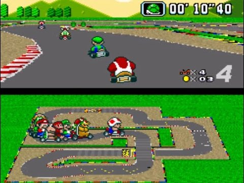

Mode 7
Description
The old SNES(Super Nintendo Entertainment System) had 8 graphic modes(0-7) which the programmers could use to display backgrounds. Mode 7 was one of those modes that allowed for translations, shearing, scaling, reflection and rotation, or any combination of those. These were all affine transformations which alone will not produce actual 3D graphics. With the additional effect of rendering the background for each scanline, pseudo-3D can be achieved by scaling each line so it would appear smaller than the next. This way a background can be rendered with the appearance of 3D.
Down below you can download a mode 7 simulation to approximate the effect on the SNES.